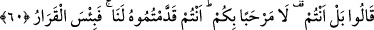
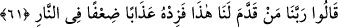

60. (Reislere uyanlar ise:) Hayır, asıl siz rahat yüzü görmeyin! Onu bize siz
sundunuz! Ne kötü bir yerdir! derler.
“(Reislere uyanlar ise)” kendileri hakkında söylenenleri duyunca uymuş oldukları
kişilere “Hayır, asıl siz rahat yüzü görmeyin!” yâni aksine size merhaba olmasın! Siz
bu belâya daha lâyıksınız… (derler.)
Bu sözleriyle reislerine hitabetmiş oluyorlar. Oysa cehennem görevlilerine
mâzeretlerini bildirmek ve bu elebaşlarıyla gerçekten anlaşamadıklarını göstermek ve -
kendi azaplarını hafifletip hasımlarının azâbını iki katına çıkartma beklentisiyle- onlarla
mahkemeleşmek istediklerini görevlilere bildirmek amacıyla “Hayır, asıl onlar rahat
yüzü görmesin!” şeklinde gıyâbî bir söz sarfetmeleri beklenirdi.
İfâdenin anlamı şudur: Ey reisler! Sizler kendi sapıklığınızın yanında bir de bizleri
saptırdığınız için cehennem görevlilerinin bizim hakkımızda söylediklerini bizden daha
çok hakediyorsunuz.
“Onu” yâni bu azâbı ya da cehenneme girişi “bize siz sundunuz!” Yâni insanı
buralara sürükleyen boş ve bozuk inançlarla kötü amelleri önümüze koyarak ve bunları
bizim gözümüze güzel gösterip onlara imrendirerek bizi buraya siz düşürdünüz. Yoksa
biz bunları kendiliğimizden yapmazdık. Bu ifâde, reislerinin niçin azâbı daha çok
hakettiklerini açıklamaktadır. Tâbîleri azaba düşüren şeyler, bu boş inançlar ve mezkûr
ameller olduğu için böyle konuşmaktadırlar. Oysa bu şeyleri onların önüne reisler
getirmemiş, bu inançları bizzat tâbîler kendi hür irâdeleriyle benimsemiş, bu amelleri
bizzat kendileri yapmışlardı. Reislerinin önlerine koymuş olduğu yegâne şey, onları bu
inanç ve amellere sevkedecek şekilde imrendirme ve aldatma idi. Bu kadarlık bir
“azaba sebebiyyet veriş” azâbı veya cehenneme girmeyi “önlerine getirme fiili”ni bu
reislerine isnâd etmeye yetmektedir.
Cehennem “ne kötü bir” karar “yer(i)dir! derler.” Cehennemi kötülemek sûretiyle
reislerinin kendileri hakkında ne kadar büyük bir suç işlemiş olduklarını anlatmaya
çalışıyorlar.
61. Yine onlar: Rabbimiz! Bunu bizim önümüze kim getirdiyse onun ateşteki
azâbını iki kat artır! derler.
“Yine onlar” yâni tâbîler reisleriyle ağız dalaşına girmekten vazgeçip Allah’a
yakararak şöyle dediler: “Rabbimiz! Bunu” yâni bu azâbı veya cehenneme girişi
“bizim önümüze kim getirdiyse…”
et-Tefsîru’l-Fârisî’de âyetin bu kısmı “Bu küfrü ve hak yoldan sapmayı bizim